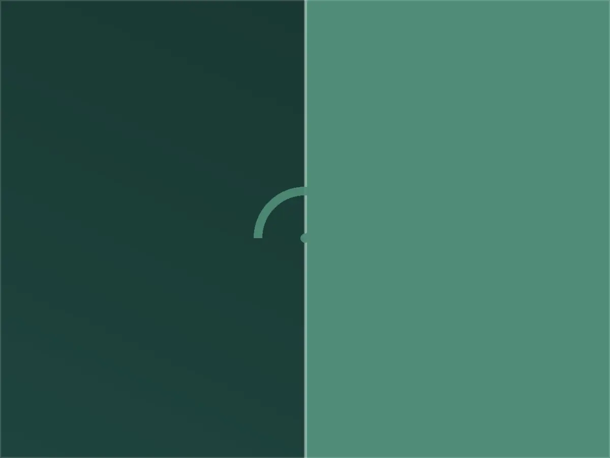
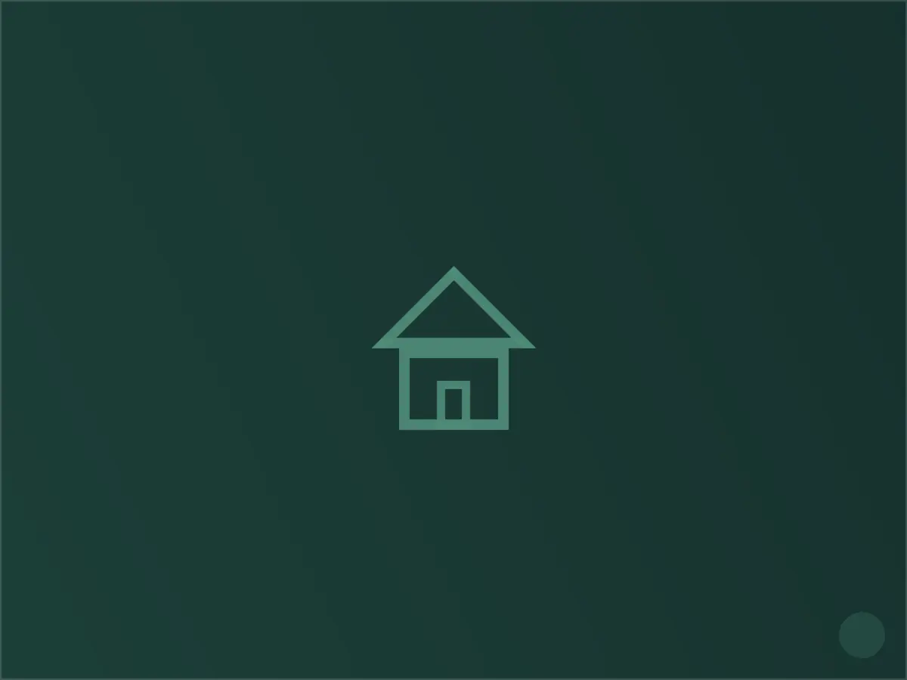

كهربائي في حي الرمال، الرياض
الرمال من الأحياء التي تتوسع بسرعة في شرق الرياض، وأغلب ما نصادفه فيه فلل ومجمعات سكنية حديثة البناء، بعضها لا يتجاوز عمره بضع سنوات. هذا يعني أن طبيعة طلباتنا هنا تختلف جذرياً عمّا نراه في الأحياء الأقدم: العميل هنا أقل قلقاً من "عطل خطير" وأكثر اهتماماً بضبط النظام وتوسيعه — إضافة دوائر لمطبخ خارجي، تجهيز الإنارة الذكية، أو ربط نظام تكييف مركزي بلوحة إضافية.
نتعامل مع هذا الجيل من المنازل كمشروع دقيق قبل أن يكون إصلاحاً: نراجع مخطط الأحمال، ونتأكد أن كل توسعة تتوافق مع سعة اللوحة الرئيسية، لأن أكثر ما يواجهنا في الرمال هو تمديدات إضافية نُفذت من مقاولين مختلفين دون تنسيق واحد يجمعها.
خدماتنا الكهربائية في الرمال
نقدّم في حي الرمال كامل الأعمال الكهربائية المنزلية: نُصلح الأعطال الطارئة، نُنفّذ الصيانة الدورية للوحات التوزيع، ونُنجز التمديدات الجديدة والتوسعات بما يشمل تمديد الأسلاك، تركيب المفاتيح والمقابس، وتأهيل نقاط التأريض. نغطي أيضاً تركيب الإنارة الداخلية والخارجية وربط الدوائر بأجهزة التكييف والمطابخ الكهربائية.

خصوصية حي الرمال — ما نلاحظه في هذا الحي تحديداً
أنواع المباني الشائعة:
- فلل ومجمعات سكنية حديثة (أقل من ١٠ سنوات) بلوحات توزيع رقمية أو شبه ذكية
- منازل بمساحات خارجية كبيرة (حدائق، مجالس خارجية، مسابح) تحتاج دوائر مستقلة
- وحدات سكنية ضمن مخططات جديدة قيد التشطيب النهائي

لماذا يختارنا سكان الرمال
استجابة سريعة
نصل عادة خلال ٤٥-٦٠ دقيقة من البلاغ، ولدينا فريق مخصص لتغطية النسيم والأحياء المحيطة به.
خبرة بطراز الحي
نقدّم في الرمال خدمة توثيق مخطط الأحمال (as-built) بعد أي توسعة، حتى يكون لدى صاحب المنزل مرجع واضح لأي صيانة مستقبلية.
ضمان مكتوب
كل عمل تمديد أو إصلاح يصدر له ضمان مكتوب يغطي القطع والتنفيذ لمدة تصل إلى سنتين.
خطوات العمل
التواصل
اتصال أو رسالة واتساب، نطلب وصفاً مختصراً للعطل لتجهيز الفني والأدوات المناسبة قبل التحرك.
المعاينة
فحص ميداني دقيق للوحة والدائرة المتأثرة، وتوضيح السبب والتكلفة قبل البدء بأي تنفيذ.
التنفيذ
إصلاح أو تمديد وفق ما تم الاتفاق عليه، مع اختبار الدائرة بعد الانتهاء وتسليم ضمان مكتوب.
أسئلة شائعة من سكان الرمال
أضفت مطبخاً خارجياً، هل أحتاج دائرة كهرباء مستقلة؟
غالباً نعم، خصوصاً إذا كان يضم أفراناً أو ثلاجات كهربائية. نقيّم الحمل المتوقع ونمد دائرة مستقلة من اللوحة الرئيسية لتفادي أي ضغط على الدوائر الحالية.
هل يمكن دمج تمديدات عدة مقاولين في مخطط واحد؟
نعم، هذه من أكثر الطلبات شيوعاً في الرمال. نفحص كل الدوائر الحالية، نوثقها، ونعيد تنظيمها في لوحة موحدة وواضحة.
هل تركّبون أنظمة إنارة ذكية متوافقة مع التطبيقات؟
نعمل مع أغلب الأنظمة الشائعة، ونهتم بشكل خاص بأن تكون دائرتها الكهربائية منفصلة عن الإنارة التقليدية لسهولة الصيانة لاحقاً.